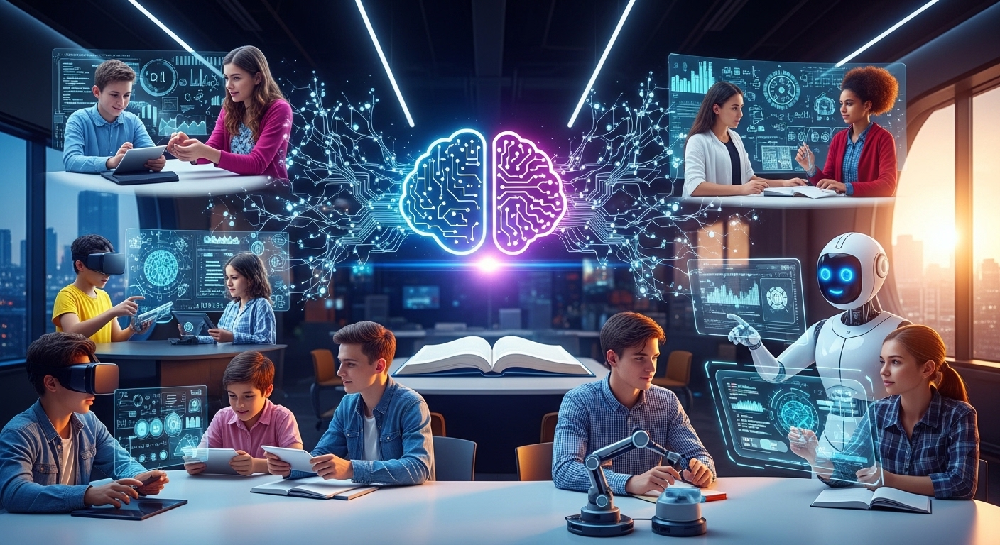

O que é a Educação 4.0?
A Educação 4.0 é uma abordagem educacional alinhada à Quarta Revolução Industrial, caracterizada pela integração de tecnologias como inteligência artificial, internet das coisas, robótica e computação em nuvem no processo de ensino-aprendizagem.
- Aprendizagem ativa e centrada no aluno
- Desenvolvimento de competências cognitivas, interpessoais e digitais
- Integração entre teoria e prática por meio da tecnologia
O que é Inteligência Artificial (IA)?
A Inteligência Artificial (IA) é o campo da computação que desenvolve sistemas capazes de executar tarefas que normalmente exigiriam inteligência humana, como reconhecer padrões, classificar informações, prever resultados e apoiar decisões.
Exemplos de aplicações de IA:
- Sistemas de recomendação (filmes, músicas, produtos)
- Reconhecimento facial
- Detecção de fraudes
- Análise preditiva de dados
Em termos técnicos, a IA inclui diversas abordagens, como machine learning, redes neurais, sistemas especialistas e visão computacional. Seu foco principal é analisar dados e tomar decisões com base em padrões aprendidos.
O que é Inteligência Artificial Generativa (IAG)?
A Inteligência Artificial Generativa (IAG) é um subconjunto da IA voltado para a criação de novos conteúdos. Em vez de apenas classificar ou prever, ela gera textos, imagens, áudios, códigos ou vídeos a partir de padrões aprendidos durante o treinamento.
Exemplos de IAG:
- Modelos que escrevem textos
- Ferramentas que criam imagens a partir de descrições
- Sistemas que geram códigos de programação
- Produção automatizada de planos de aula ou atividades
A IAG utiliza arquiteturas avançadas, como Transformers e modelos de linguagem de grande escala (LLMs), capazes de produzir conteúdos coerentes e contextualmente adequados.
Diferença entre IA e IAG
| Inteligência Artificial | Inteligência Artificial Generativa |
|---|---|
| Analisa, classifica e prevê | Cria e produz novos conteúdos |
| Foco em decisão e reconhecimento de padrões | Foco em geração de texto, imagem, áudio, código |
| Pode não gerar conteúdo novo | Sempre gera algo novo a partir de padrões aprendidos |
| Campo amplo | Subárea específica da IA |
O papel da IA na Educação 4.0
A Inteligência Artificial desempenha um papel estratégico no apoio à inovação pedagógica, permitindo:
- Automação de tarefas administrativas e avaliativas
- Geração de conteúdo personalizado
- Diagnóstico e monitoramento de aprendizagem em tempo real
- Inclusão e acessibilidade por meio de adaptações automatizadas
Benefícios da IA para Educadores
| Aplicação | Benefício |
|---|---|
| Criação de atividades | Agilidade, diversidade e personalização |
| Planejamento de aulas | Organização e alinhamento com a BNCC |
| Diagnóstico de aprendizagem | Feedback imediato com base em evidências |
| Adaptação ao perfil do aluno | Personalização para necessidades específicas |
Exemplo Prático: Projeto Interdisciplinar com IA
Turma do 8º ano desenvolve um projeto sobre sustentabilidade com apoio da IA generativa.
| Pilar | Como a IA contribui |
|---|---|
| Educação (Conhecimento) | Apoio à pesquisa, criação de mapas mentais e resumos sobre sustentabilidade. |
| Atitude (Comportamento) | Simulações e propostas de ações locais para reduzir o impacto ambiental. |
| Valor (Ética e Propósito) | Debates com a IA sobre ética ambiental e textos reflexivos com propósito social. |
Formação Docente e Transformação Digital
Para aproveitar o potencial da IA na educação, é essencial que os educadores:
- Entendam como a IA funciona e suas limitações
- Utilizem-na com criticidade, ética e propósito pedagógico
- Desenvolvam suas próprias competências digitais
A Inteligência Artificial não substitui o professor. Ela amplia suas possibilidades, personaliza a aprendizagem e enriquece a experiência educacional. Na Educação 4.0, a IA deve ser vista como uma parceira estratégica para formar alunos críticos, criativos e preparados para o futuro.
Quer se aprofundar?
Para explorar com mais profundidade o uso da IA em contextos de ensino e aprendizagem, acesse o UNESCO – Guidance for Generative AI in Education & Research (2023). Nele você encontrará fundamentos, boas práticas e exemplos práticos que fortalecem o uso da IA como aliada pedagógica — ética, crítica e centrada no aluno.
🔗 Veja também o conteúdo sobre Ética no Uso da Inteligência Artificial